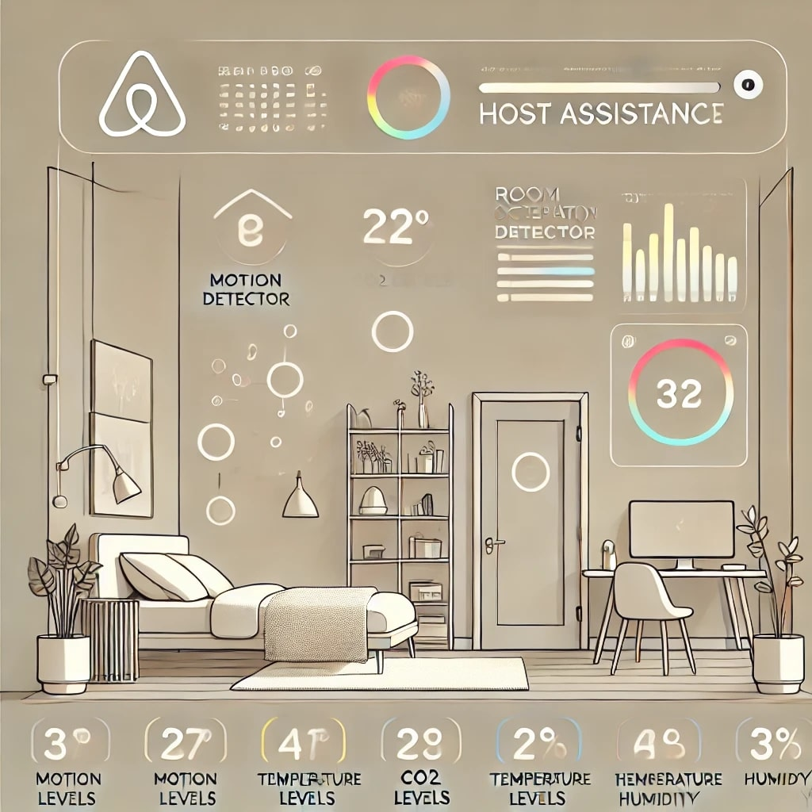

Profile
Dedicated data analyst with hands-on experience in data visualization, and data analysis and cloud computing. Passionate about leveraging data-driven insights to drive business decisions and enhance operational efficiency.
Skills
- Data Analysis: SQL, Excel, Python (Pandas, NumPy)
- Advanced Data Analytics with Google Cloud Platform
- Data Visualization: Tableau, Power BI, Matplotlib, Seaborn
- Machine Learning & Modeling: Scikit-learn (predictive modeling, clustering)
- Programming Languages: Python, Java, C++, C#
- Web Development: Django, Flask, FastAPI, HTML, CSS, JavaScript
- Data Engineering: Apache Kafka, Apache Spark, ETL Processes
- Platforms & Tools: Google Cloud Platform, Git, GitHub, Kaggle
Projects
-
Desktop-Based ETL Tool: Designed and implemented a desktop-based ETL tool in Java to extract, transform, and load data from various sources into target databases, streamlining data integration processes for users.
-
Room Occupancy Detector: Developed a real-time monitoring system with data streaming and occupancy prediction models using Django, Flask, and FastAPI to analyze room utilization for effective space management.

-
HTML Autocorrection Tool: Created a tool using JavaScript that automatically detects and suggests corrections for common HTML errors, improving web development efficiency.

-
Sales Data Analysis Dashboard: Developed an interactive dashboard in Power BI to analyze sales data, identifying key sales trends, seasonal patterns, and high-performing product categories, enabling data-driven decision-making for stakeholders.

-
HR Employee Attrition Dashboard: Built an HR analytics dashboard in Tableau to visualize employee attrition rates, analyze key factors affecting turnover, and highlight insights on demographics, job satisfaction, and tenure, supporting HR retention strategies.

-
Diabetes Prediction Dashboard: Created a machine learning-powered dashboard using Python (Pandas, scikit-learn) and Power BI to predict diabetes risk based on patient data, aiding healthcare professionals in early intervention.

-
Customer Segmentation Analysis: Applied clustering algorithms and data visualization techniques to segment customers based on purchasing behavior, helping design targeted marketing campaigns.

-
Sales Forecasting Model: Conducted time-series analysis and forecasting using Python (Pandas, statsmodels) to predict future sales trends, optimizing inventory levels and reducing stockouts for an e-commerce platform.

-
Infant Guard - Baby Monitoring System: Developed a smart monitoring system using IoT technologies to track baby movements and provide alerts for caregivers, enhancing child safety.

Online Courses
Completed several online courses to enhance skills and knowledge, including:
- Google Advanced Data Analytics Professional Course
- Kaggle Courses: Various data science and machine learning courses
- Coursera Courses: Including [insert specific course names or topics]
- DataCamp Courses: Focused on data analysis and visualization techniques
- HackerRank: Engaged in coding challenges to improve programming skills
- LeetCode: Practiced algorithm and data structure problems to prepare for technical interviews
Kaggle Competitions
Participated in various Kaggle competitions, applying data analysis and machine learning skills to real-world datasets. Developed predictive models and data visualizations that have been recognized within the community.
Volunteer Work
Offered data analysis services to local non-profits and small businesses, helping them derive insights from their data. Engaged in community workshops to enhance data literacy.